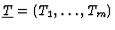
sets of variables. We call specialization any ring homomorphism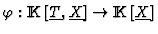
such that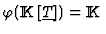
and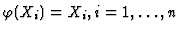
. The specialization associated to a point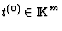
is the one defined by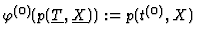
, for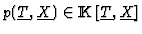
. Let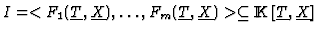
\subseteq {\rm I\kern -2.2pt K\hskip 1pt}[\underline{T},\underline{X}]$"> be an ideal, > a monomial ordering in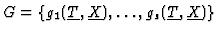
a Gröbner basis of I with respect to >. The most practical question that we would like to solve is to determine the subset W of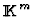
such that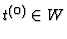
if and only if its associated specialization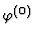
verifies that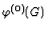
is a Gröbner basis of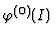
. From a computational point of view this is the most interesting aspect, as once we have computed W, every time that we are given a value to the parameters we just have to test if it belongs or not to W to determine if we have or not a Gröbner basis. There are two possibilities to deal with this problem: to perform the initial Gröbner Bases computation in